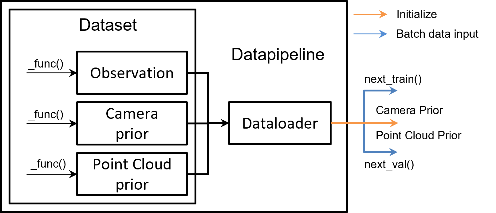

数据流水线#
如下图所示，数据流水线由两个部分组成：Dataset 和 DataPipeline。
Dataset：负责标准化用户数据集，即将它们转换为 Pointrix 的统一数据格式：这个数据格式包含三部分，相机先验，点云先验，以及观测信息。相机先验主要包含相机的内外参信息， 点云先验主要为离线SFM等方法得到的初始化点云信息。观测信息包含各种相机观察到的以及处理后信息，例如rgb，depth，normal等。Pointrix提供了常用的数据集提取代码，用户如需要 加载自定义的数据，则需要重载对应的
_load_camera_prior,_load_pointcloud_prior, 以及_load_metadata函数。DataPipeline：Pointrix 中的标准数据流提供了稳定的数据流给训练器。这个类的主要函数是
next_train()和next_val()，这两个函数可以返回Batch。这个batch将用于渲染和损失计算。同时DataPipeline 也将给模型提供相机的初始化以及点云的初始化，如下图所示：

Note
如果需要载入用户自定义的数据集，用户需要重载修改对应的观测，相机先验，以及 点云先验对应的函数。 相关例子可以看教程中的为点云添加监督。